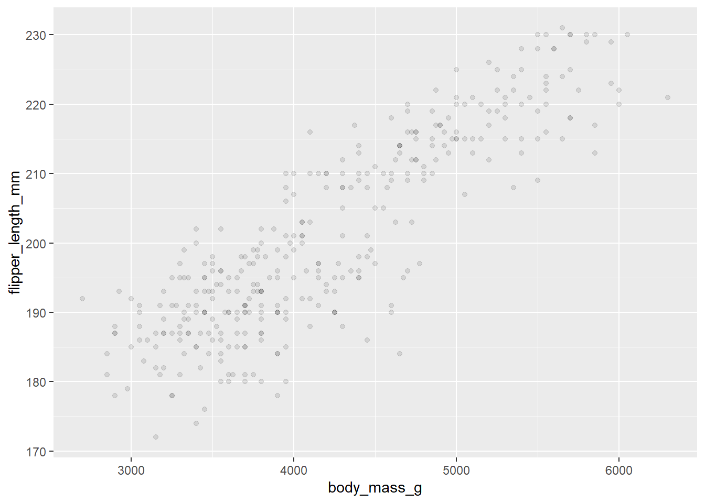
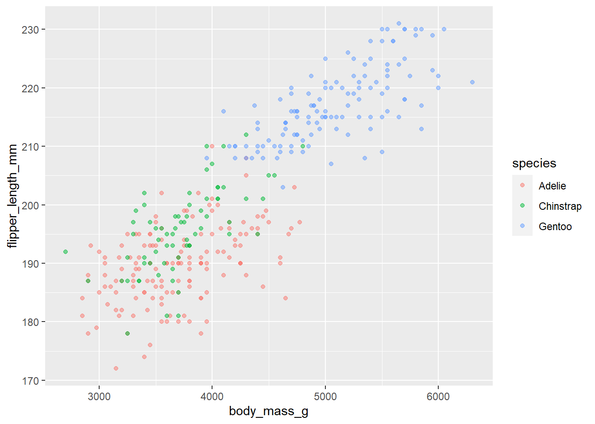
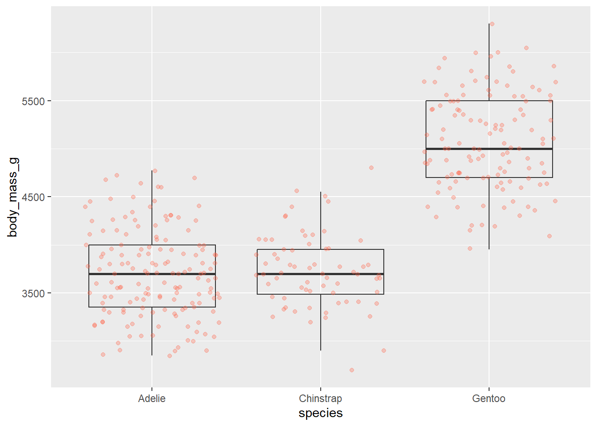
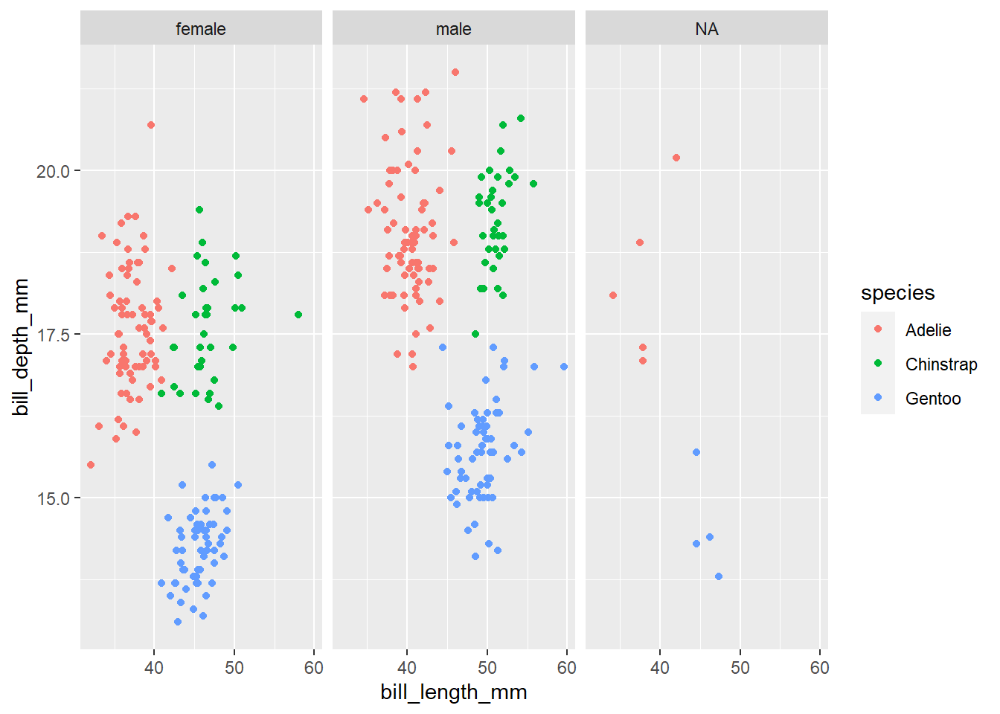
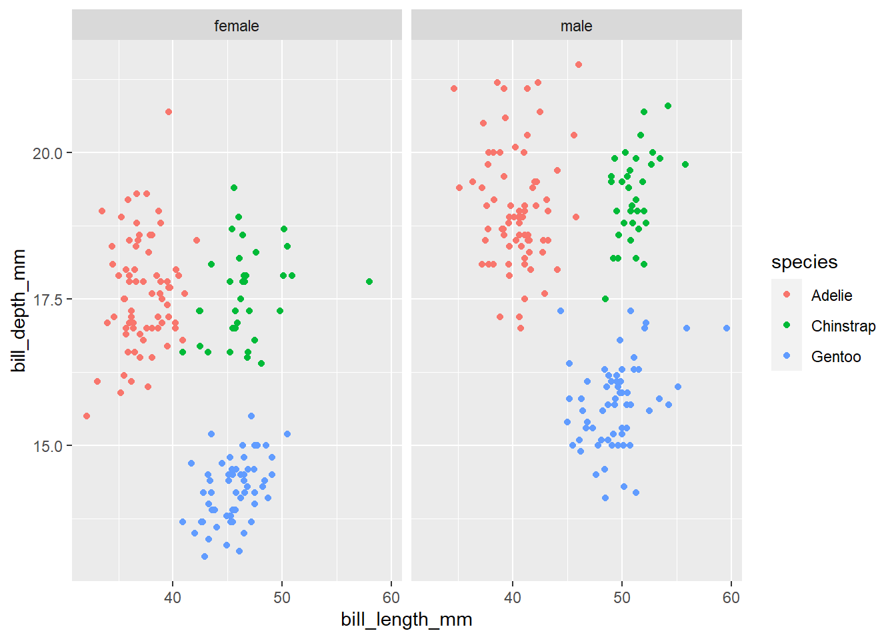
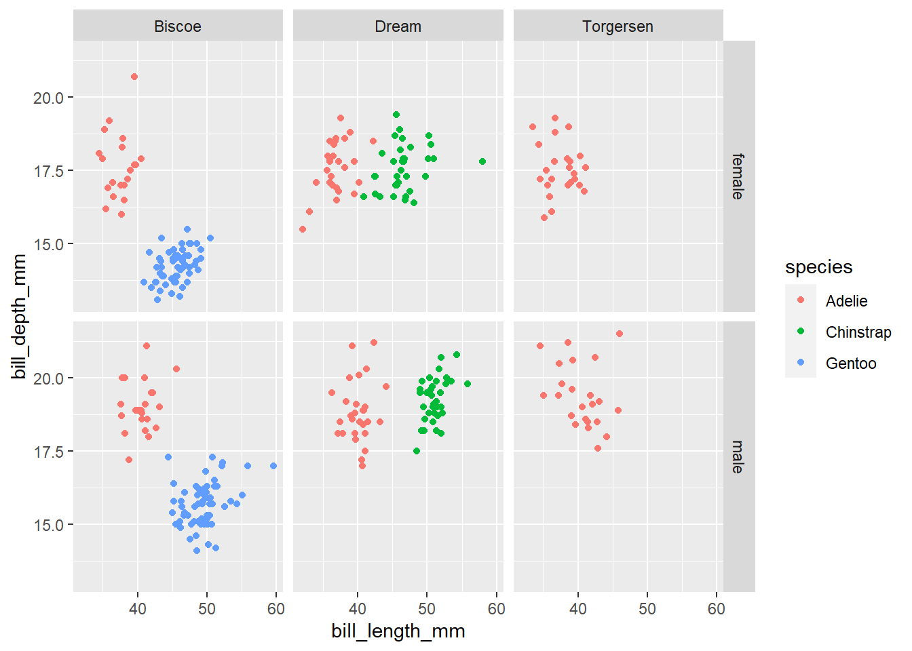
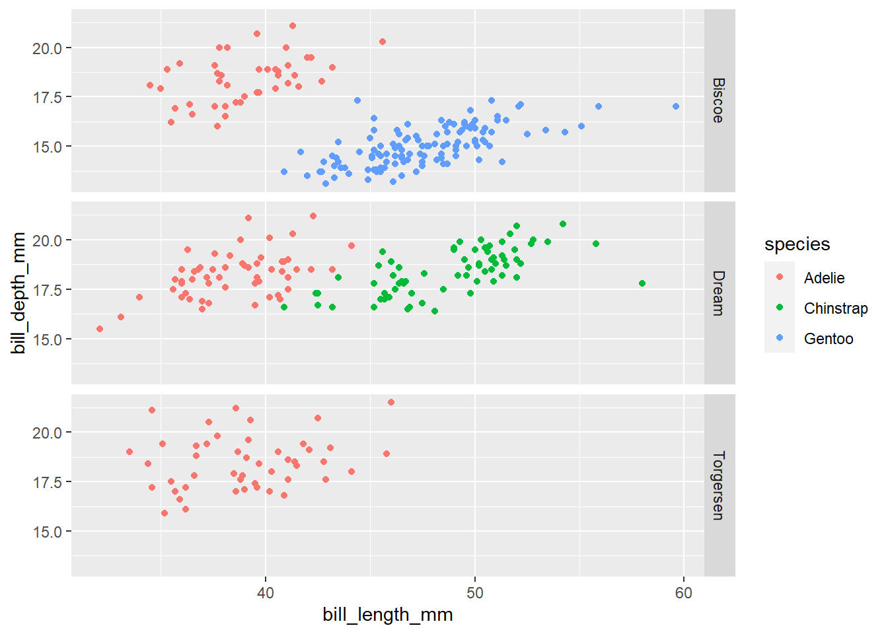
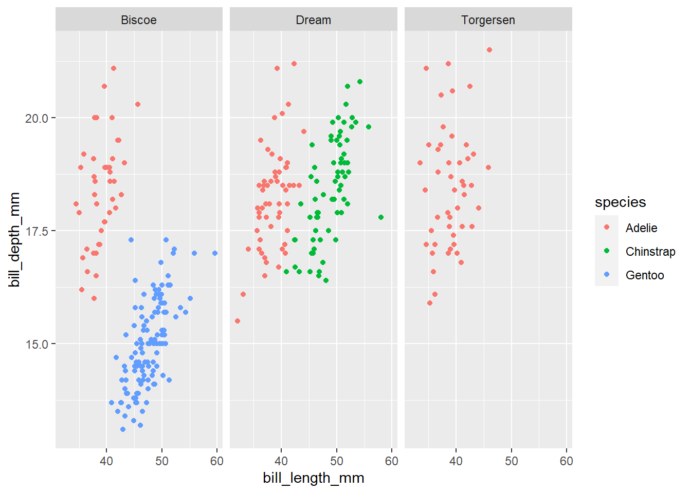
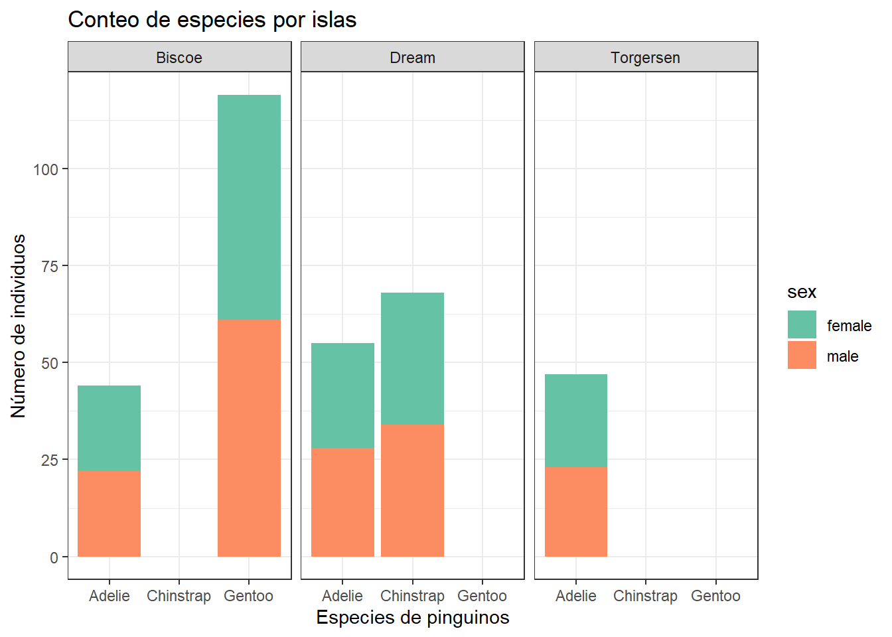

Visualización de datos con GGPLOT2
En este sección aprenderemos a cómo visualizar tus datos usando la
librería ggplot2. De los muchos sistemas que posee R para
hacer gráficos, ggplot2 es uno de los más elegantes y
versátiles. Esto se debe a que ggplot2 implementa un sistema coherente
para describir y construir gráficos, conocido como la gramática de
gráficos. Con ggplot2 puedes hacer más cosas en menor
tiempo, aprendiendo un único sistema y aplicándolo en diferentes
ámbitos.
Para iniciar esta sección requeriremos lanlibrería
ggplot2 que se encuentra incluida dentro del universo
tidyverse. Si deseas obtener más fundamentos teóricos antes
de iniciar esta sección puedes revisar este
enlace.
library(tidyverse)
library(palmerpenguins)Importemos nuestra base de datos previamente guardada en la lección anterior.
penguins_com <- read_csv("data/penguins_complete.csv")
penguins_raw_complete <- read_csv("data/penguins_raw_complete.csv")Graficos con ggplot2
ggplot2() es una librería de visualización que emplea
comando útiles para elaborar graficos complejos apartir de un conjunto
de datos. La principal función de esta paquetería lleva el mismo nombre
ggplot().
ggplot2 funciona mucho mejor con datos en formato largo
(cada columna es una variable y cada fila una observación). Una base de
datos bien estructurada te ahorrará mucho tiempo cuando intentes hacer
gráficos con ggplot2.
Los gráficos de ggplot se construyen capa por cada en donde se van
añadiendo nuevos elementos en cada una. Añadir capas te permitrá tener
una gran flexibilidad y personalización de las mismas sin alterar las
otras. Para construir un gráfico empleando ggplot tendremos
que usar la siguiente estructura:
ggplot(data = <DATA>, mapping = aes(<MAPPINGS>)) + <GEOM_FUNCTION>()data, aqui se coloca el nombre del objeto que contenga la base de datos
mapping, usa la función aesthetic (aes), define las variables que serán graficadas y su posición (eje x o y). Asi mismo, aqui se puede definir otras características como el tamaño, forma, color.
geoms_function, es la representación gráfica de los datos (puntos, líneas, barras).
ggplot2ofrece diferentes gráficos de los cuales exploraremos algunas el día de hoy:geom_point()para un gráficos de dispersióngeom_boxplot()para gráfico de cajasgeom_line()para gráfico de línas o serie de tiempo
Para agregar un gráfico se emplea el operador +. Veamos
el siguiente ejemplo:
ggplot(data = penguins_com, aes(x = body_mass_g, y = flipper_length_mm)) +
geom_point()
El operado + en ggplot2 es particularmente
útil porque te permite modificar el objeto gráfico existente. Esto
significa que puedes fácilmente crear un “template” y explorar
diferentes tipos de gráficos. El gráfico anterior puede también ser
creado de la siguiente manera:
# Asignando variables al gráfico
penguins_plot <-
ggplot(data = penguins_com,
mapping = aes(x = body_mass_g, y = flipper_length_mm))
# Graficando
penguins_plot +
geom_point()
NOTAS
El símbolo
+debe ser usado en cada capa gráfica que se añada.Puedes establecer los aes() en cada capa gráfica.
Construyendo gráficos
Elaborar gráficos con ggplot2 es un proceso iterativo.
Empezamos definiendo la base de datos que usaremos luego la posición de
las variables (eje x o y) y por último escogemos el tipo de gráficos
(“geoms”).
ggplot(data = penguins_com, aes(x = body_mass_g, y = flipper_length_mm)) +
geom_point()
Luego podemos comenzar a modificar el gráfico para extrar más información del este. Por ejemplo, podemos modificar la transparencia (alpha) para evitar la sobreposición de puntos.
ggplot(data = penguins_com, aes(x = body_mass_g, y = flipper_length_mm)) +
geom_point(alpha = 0.1)
O seleccionar un color específico para cada especie.
ggplot2 tiene diferentes paletas de colores muchas de las
cuales se encuentran disponivles en la libería RColorBrewr.
Veamos un ejemplo:
ggplot(data = penguins_com, mapping = aes(x = body_mass_g, y = flipper_length_mm)) +
geom_point(alpha = 0.5, aes(color = species))
Gráfico de cajas
Podemos emplear el gráfico de cajas para visualizar la distribución del peso de cada especie de pinguino:
ggplot(data = penguins_com, aes(x = species, y = body_mass_g)) +
geom_boxplot()
Podemos añadir las observaciones a cada caja para tener una mejor idea del número de mediciones y de su distribución:
ggplot(data = penguins_com, aes(x = species, y = body_mass_g)) +
geom_boxplot(alpha = 0) +
geom_jitter(alpha= 0.3, color = "tomato")
¿Notas que la capa de boxplot está detrás de la capa de jitter? ¿Qué hay que cambiar en el código para poner el boxplot delante de los puntos y que no quede oculto?
# EJERCICIO
# Los diagramas de cajas son útiles pero no muestran la forma de la distribución. Por ejemplo, si nuestra distribución es bimodal no se observaría con un boxplot. Una alternativa es usar el diagrama de violín. Este gráfico muestra la forma de la distribución (densidad de puntos)
# Reemplaza el boxplot por la función geom_violin(). Trata de hacer un nuevo plot para explorar la distribución de otra variable dentro de cada especie.
# Algunas sugerencias:
# Crea un boxplot para la variable flipper_length_mm.
# Sobrepone al gráfico una capa jitter para mostrar el total de observaciones
# Añade color a los puntos de datos de tu boxplot según el gráfico en el que se encuentra la observación (island)Integrando el operador pipe con ggplot2
En la sección anterior, vimos cómo utilizar el operador de
%>% para utilizar diferentes funciones en una secuencia
y crear un flujo de trabajo coherente. También podemos usar el operador
pipe para pasar el argumento de los datos a la función
ggplot(). La parte difícil es recordar que para construir
tu ggplot, necesitas usar + y no
%>%.
# Este código puede ser escrito de la siguiente manera
ggplot(data = penguins_com, aes(x = flipper_length_mm, y = species)) +
geom_violin() +
geom_jitter(aes(color = species))
penguins_com %>%
ggplot(aes(x = flipper_length_mm, y = species)) +
geom_violin() +
geom_jitter(aes(color = species))Faceting
ggplot dispone de una técnica especial llamada
facet() que permite al usuario dividir un gráfico en
múltiples gráficos en función de un factor incluido en el conjunto de
datos. Lo utilizaremos para observar las características del pico de
pinguino de cada especie.
penguins %>%
ggplot(aes(x = bill_length_mm, bill_depth_mm, color = species)) +
geom_point() +
facet_wrap(facets = vars(sex))
Observa cómo los valores Nan de sexo aparecen en nuestro gráfico. Creemos un nuevo subconjunto de datos para excluir esos puntos y volvamos a ver el gráfico.
# Eliminamos NA
penguins_complete <-
penguins %>%
filter(!is.na(sex))penguins_complete %>%
ggplot(aes(x = bill_length_mm, y = bill_depth_mm, color = species)) +
geom_point() +
facet_wrap(facets = vars(sex))
También podemos separar los gráficos por sexo e isla:
penguins_complete %>%
ggplot(aes(x = bill_length_mm, y = bill_depth_mm, color = species)) +
geom_point() +
facet_grid(rows = vars(sex), cols = vars(island))
También se puede organizar los gráficos sólo por filas (o sólo por columnas):
# Sólo por filas
penguins_complete %>%
ggplot(aes(x = bill_length_mm, y = bill_depth_mm, color = species)) +
geom_point() +
facet_grid(rows = vars(island))
# Sólo por columnas
penguins_complete %>%
ggplot(aes(x = bill_length_mm, y = bill_depth_mm, color = species)) +
geom_point() +
facet_grid(cols = vars(island))
Temas en GGPLOT2
Normalmente los gráficos con fondo blanco son más legibles cuando se
imprimen. Cada uno de los componentes de un gráfico ggplot puede
personalizarse utilizando la función theme(), como veremos
a continuación. Sin embargo, existen temas precargados que cambian la
apariencia general del gráfico sin mucho esfuerzo.
penguins_complete %>%
ggplot(aes(x = species, fill = sex)) +
geom_bar() +
scale_fill_brewer(palette = "Set2") +
facet_grid(cols = vars(island)) +
labs(title = "Conteo de especies por islas",
x = "Especies de pinguinos",
y = "Número de individuos") +
theme_bw()
Además de theme_bw(), que cambia el fondo del gráfico a
blanco, ggplot2 viene con varios otros temas que pueden ser
útiles para cambiar rápidamente el aspecto de su gráfico. La lista
completa de temas está disponible en https://ggplot2.tidyverse.org/reference/ggtheme.html.
theme_minimal() y theme_light() son populares,
y theme_void() puede ser útil como punto de partida para
crear un nuevo tema hecho a mano.
La librería ggthemes tiene una amplia variedad de opciones.
Exportando gráficos
Después de crear su gráfico, puede guardarlo en un archivo en su
formato favorito. La pestaña Exportar del panel de gráficos en RStudio
guardará sus gráficos en baja resolución, que no será aceptada por
muchas revistas y no se escalará bien para los pósters. En su lugar,
utilice la función ggsave(), que le permite cambiar
fácilmente la dimensión y la resolución de su gráfico ajustando los
argumentos adecuados (ancho, altp y dpi:
conteo_isla_graph <-
penguins_complete %>%
ggplot(aes(x = species, fill = sex)) +
geom_bar(position = "dodge") +
scale_fill_brewer(palette = "Set2") +
facet_grid(cols = vars(island)) +
labs(title = "Conteo de especies por islas",
x = "Especies de pinguinos",
y = "Número de individuos") +
theme_bw()ggsave("docs/graphs/conteo_isla_graph.png", conteo_isla_graph, width = 10, dpi = 300)## Saving 10 x 5 in image